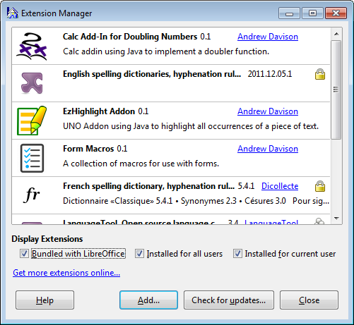
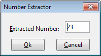
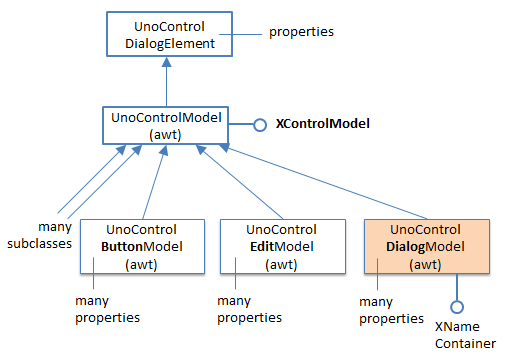
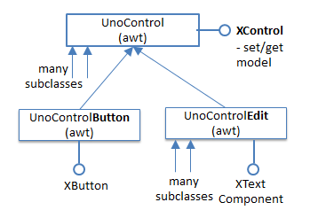
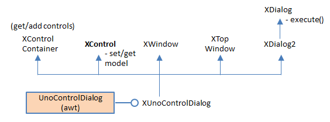
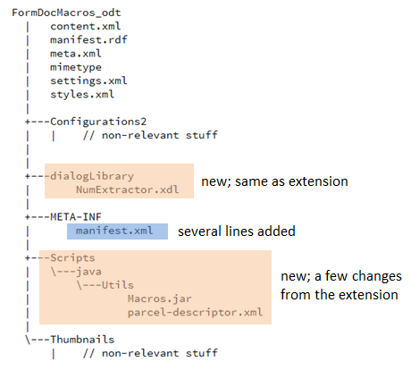
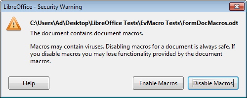
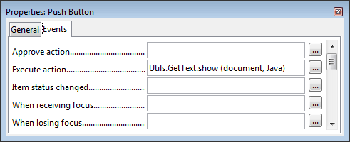

Chapter 49. Extension and Document
Event Macros
The previous chapter introduced event macros, and described
how a simple macro could be installed by copying it to a
specific Office directory. This chapter looks at two other
ways to package macros: as extensions, and by attaching
them to documents.
1. Form Macros as an Extension
Adding a macro to Office by installing it as an extension means that the user doesn't need to grapple with Office folders and copying files since Office's extension manager does it for them. This section also uses more complex macros than the ones in the previous chapter, namely ones that utilize their own dialogs and employ my utility classes.
The FormMacros.oxt extension is created by zipping up a FormMacros\ folder, which is listed below:
FormMacros
| description.xml
| form.png
| license.txt
| package-description.txt
|
+---dialogLibrary
| NumExtractor.xdl
|
+---META-INF
| manifest.xml
|
---Utils
GetNumber.class
GetText.class
NumActionListener.class
parcel-descriptor.xml
Utils.jar
The macros are in the Utils\ folder, and are utilized by the form stored in FormMacrosTest.odt in the ways shown in Figure 1.
Topics
Form Macros as
an Extension; Loading an XML Dialog; Building a Dialog at Runtime; Storing Macros inside the (Form) Document; Attaching Macros to Other Events; Executing Macros from the Command Line Example folders: "EvMacro Tests" and "Utils"

Figure 1. A Form and its Macros.
Figure 1 illustrates the actions of two macros. GetText.show is attached to the form's
button, and display the text in the adjacent textfield when the button is pressed. The
GetNumber.get macro is attached to the second textfield, and is activated when
To simplify the example a little, FormMacrosTest.odt was created by hand rather than programmatically. Also, I'm going to attach the extension's macros to the button and textfield using Office's GUI, as explained shortly.
I won’t explain all the contents of the FormMacros\ folder, because most of them were covered in early chapters, particularly in Chapter 45. For example, I won't be describing how I drew the "Number Extractor" dialog stored in dialogLibrary\NumExtractor.xdl since that technique was covered in the last chapter, in section 5.
The new elements of FormMacros\ are the contents of manifest.xml and parcel- descriptor.xml.
manifest.xml states the location of the macros inside the extension, which in my case are in the Utils\ subdirectory. This is encoded as:
parcel-descriptor.xml give details about the two macros, GetText.show and GetNumber.get, which are used by the Macro Selector dialog:
There's an important difference between this parcel-descriptor.xml and the one given
for ShowEvent.show in the previous chapter, related to the new macros' classpaths:
The difference, which took many hours of experimentation to find, is due to the inclusion of my utilities classes as a JAR in Utils.
When Utils.jar is in the extension, Office is unable to recognize GetText.show and
GetNumber.get packaged as JARs (e.g. as GetText.jar and GetNumber.jar). It appears
that Office can only add a single JAR to its classpath with
Instead I've stored the macros as .class files in Utils. In addition, it's necessary to include "." in the classpath so NumActionListener.class can be found at runtime.
The three Java files (GetText.java, GetNumber.java, and NumActionListener.java) are compiled and manually copied into FormMacros\Utils. Then the installMacros.bat batch script zips up the folder as an OXT file, and calls unopkg.exe to install it. The extension manager displays the "Form Macros" as in Figure 2.

Figure 2. The Form Macros Extension.
By default, extension macros are installed as user macros, as can be seen in the Macro Selector dialog in Figure 3.

Figure 3. The User Extension Macros in the Macro Selector.
The Utils\ subdirectory of the extension has become a module called Utils.
The full names of the extension macros can be obtained using my ListMacros.java or FindMacros.java examples. For example: run FindMacros Utils produces:
Matching Macros in Office: (2) vnd.sun.star.script:Utils.GetNumber.get? language=Java&location=user:uno_packages/FormMacros.oxt
vnd.sun.star.script:Utils.GetText.show? language=Java&location=user:uno_packages/FormMacros.oxt
1.1. The GetText.show Macro
GetText.show is triggered when a button is pressed; it displays the text currently in the "Text Box 1" textfield inside a message box (see Figure 1). The code for the class is:
// in GetText.java public class GetText { private static final String LOG_FNM = "c://macrosInfo.txt"; // log file for storing debugging output
public static void show(XScriptContext sc, ActionEvent e)
// Called when a button pressed
{
String controlName = Forms.getEventSourceName(e);
FileIO.appendTo(LOG_FNM, "\"" + controlName +
"\" sent ActionEvent at " + Lo.getTimeStamp());
XComponent doc = Lo.scriptInitialize(sc);
if (doc == null)
return;
// for debugging
Console console = new Console();
console.setVisible(true);
Forms.listForms(doc);
XControlModel textBox = Forms.getControlModel(doc, "Text Box 1");
// Props.showObjProps("TextBox", textBox);
String textContents = (String)Props.getProperty(textBox, "Text");
GUI.showXMessageBox("Textbox text", textContents);
console.setVisible(false);
console.closeDown();
} // end of show() for ActionEvent
} // end of GetText class
The class implements a single show() method suitable for responding to ActionEvents.
Forms.getEventSourceName() returns the name of the control that sent the event and FileIO.appendTo() writes the details to a log file. This log is useful for debugging, and can be removed when the macro is finished.
Lo.scriptInitialize() uses the macro's XScriptContext object to initialize globals maintained by my Lo class:
// in the Lo class
// globals
private static XComponentContext xcc = null;
private static XDesktop xDesktop = null;
private static XMultiComponentFactory mcFactory = null;
private static XMultiServiceFactory msFactory = null;
public static XComponent scriptInitialize(XScriptContext sc) { if (sc == null) { System.out.println("Script Context is null"); return null; }
xcc = sc.getComponentContext(); if (xcc == null) { System.out.println("Could not access component context"); return null; } mcFactory = xcc.getServiceManager(); if (mcFactory == null) { System.out.println("Office Service Manager is unavailable"); return null; }
xDesktop = sc.getDesktop(); if (xDesktop == null) { System.out.println("Could not access desktop"); return null; }
XComponent doc = xDesktop.getCurrentComponent(); if (doc == null) { System.out.println("Could not access document"); return null; }
msFactory = Lo.qi(XMultiServiceFactory.class, doc); return doc; } // end of scriptInitialize()
The log approach is fine for simple debugging, but it's also possible to create a Console window for displaying more complex textual output. One useful thing to report are the form's control details, by calling Forms.listForms(). The Console window looks as in Figure 4.

Figure 4. The Console Window Output for GetText.show.
The control names in Figure 4 include "Text Box 1", which is used by Forms.getControlModel() to reference the textfield control:
// part of show() in GetText.java...
XControlModel textBox = Forms.getControlModel(doc, "Text Box 1"); String textContents = (String)Props.getProperty(textBox, "Text"); GUI.showXMessageBox("Textbox text", textContents);
1.2. The GetNumber.get Macro
The second textfield in Figure 1 is called "AgeText". Its listener processes the text
when the user types

Figure 5. The "AgeText" Properties Dialog.
GetNumber.get is woken up by every keypress, which should be ignored until the key
is
The GetNumber class defines a single static get() method, suitable for receiving KeyEvents:
// in GetNumber.java
public static void get(XScriptContext sc, KeyEvent e)
{
String controlName = Forms.getEventSourceName(e);
if (e.KeyCode == Key.RETURN) { // return typed
XComponent doc = Lo.scriptInitialize(sc);
if (doc != null) {
XControlModel cModel =
Forms.getControlModel(doc, controlName);
if (Forms.isTextField(cModel))
loadXDLDialog(cModel);
// runtimeDialog(cModel);
}
}
} // end of get()
When the
If the control is a textfield then the "Number Extractor" dialog is displayed in one of two ways – either loadXDLDialog() loads the dialog's XML from dialogLibrary\NumExtractor.xdl inside the extension, or runtimeDialog() creates the dialog dynamically by calling methods in my Dialogs utility class. I'll look at each approach in the next two sections.
1.3. Loading an XML Dialog
Chapter 46 on Add-ons describes how to use Office's dialog editor to create a dialog and export it as an XDL file. The same steps were used to create NumExtractor.xdl, which is shown in Figure 6.

Figure 6. The NumExtractor.xdl Dialog.
The XML contents of NumExtractor.xdl are:
The most important things to note for later are the control IDs; in particular, the textfield and button names: "TextField1", "CommandButton1", and "CommandButton2".
loadXDLDialog() utilizes Dialogs.loadAddonDialog() described in Chapter 46 to obtain a reference to the dialog. It's initialized by initDialog() and made live by XDialog.execute():
// in GetNumber.java
private static void loadXDLDialog(XControlModel cModel)
{
XDialog dialog = Dialogs.loadAddonDialog(
"org.openoffice.formmacros",
"dialogLibrary/NumExtractor.xdl");
if (dialog == null)
return;
initDialog(dialog, cModel);
dialog.execute();
} // end of loadXDLDialog()
initDialog() fills the dialog's textfield with numerical data extracted from the form's "AgeText" field, and attaches a NumActionListener to its buttons:
// part of GetNumber.java
private static void initDialog(XDialog dialog,
XControlModel cModel)
{
XControl dialogCtrl = Dialogs.getDialogControl(dialog);
if (dialogCtrl == null)
return;
int val = extractDigits(
(String)Props.getProperty(cModel, "Text"));
// store extracted number in dialog's read-only text field; // the names of the controls are hardwired XTextComponent numFieldTB = Lo.qi(XTextComponent.class, Dialogs.findControl(dialogCtrl, "TextField1")); numFieldTB.setText(""+val);
// assign same listener to both buttons
NumActionListener naListener =
new NumActionListener(dialog, cModel, val);
XButton okButton = Lo.qi(XButton.class, Dialogs.findControl(dialogCtrl, "CommandButton1")); okButton.addActionListener(naListener);
XButton cancelButton = Lo.qi(XButton.class, Dialogs.findControl(dialogCtrl, "CommandButton2")); cancelButton.addActionListener(naListener); } // end of initDialog()
Dialogs.findControl() finds the dialog's textfield and buttons using the IDs that we saw in NumExtractor.xdl.
The NumActionListener class is included in the extension's Utils\ folder. It's a standard button listener, but uses Office's XActionListener and ActionEvent not the Java classes with similar names:
// in NumActionListener.java public class NumActionListener implements XActionListener { private XDialog dialog; private XControlModel cModel; private int val;
public NumActionListener(XDialog dialog,
XControlModel cModel, int val)
{ this.dialog = dialog;
this.cModel = cModel;
this.val = val;
} // end of NumActionListener()
public void actionPerformed(ActionEvent e) { String buttonName = Dialogs.getEventSourceName(e); System.out.println("Event received from : " + buttonName);
if (buttonName.equals("CommandButton1")) // "OK" button
Props.setProperty(cModel, "Text", "" + val);
// put val in text field
else if (buttonName.equals("CommandButton2")) // "Cancel"
Props.setProperty(cModel, "Text", ""); // clear text field
dialog.endExecute();
} // end of actionPerformed()
public void disposing(EventObject e) { }
} // end of NumActionListener class
The number extracted from the "AgeText" textfield is passed to the listener via its constructor, along with a reference to the control. If the user presses "Ok" then the number is written into the textfield, otherwise an empty string is used to clear its contents.
1.4. Building a Dialog at Runtime
Office's dialog editor is the easiest way to construct a dialog, but there may be situations where you want to create a simple dialog at run time. The commented-out call to runtimeDialog() in GetNumber.get shows how to do this using my Dialog class functions:
// part of GetNumber.java private static void runtimeDialog(XControlModel cModel) { XControl dialogCtrl = makeDialogControl(); if (dialogCtrl == null) return;
XDialog dialog = Dialogs.createDialogPeer(dialogCtrl); if (dialog == null) return;
initDialog(dialog, cModel); dialog.execute(); } // end of runtimeDialog()
The dialog generated by makeDialogControl() (see Figure 7) is very similar to the one defined in NumExtractor.xdl.

Figure 7. The Rendering of the Runtime Dialog.
makeDialogControl() creates an empty dialog, and fills it with a label, textfield and two buttons:
// part of GetNumber.java
private static XControl makeDialogControl()
{
XControl dialogCtrl =
Dialogs.createDialogControl(109, 73, 94, 44,
"Number Extractor");
if (dialogCtrl == null)
System.out.println("dialog control is null");
// log("Dialog name:" + Dialogs.getControlName(dialogCtrl));
// reports "OfficeDialog1"
XControl xc = Dialogs.insertLabel(dialogCtrl, 8, 11, 48,
"Extracted Number: ");
// log("Label name:" + Dialogs.getControlName(xc));
// FixedText1
xc = Dialogs.insertTextField(dialogCtrl, 61, 9, 24, ""); // log("Text field name:" + Dialogs.getControlName(xc)); // TextField1
xc = Dialogs.insertButton(dialogCtrl, 9, 27, 33, "Ok"); // log("Ok button name:" + Dialogs.getControlName(xc)); // CommandButton1
xc = Dialogs.insertButton(dialogCtrl, 52, 27, 33, "Cancel"); // log("Cancel button name:" + Dialogs.getControlName(xc)); // CommandButton2
return dialogCtrl; } // end of makeDialogControl()
One tricky aspect is deciding on the control positions and widths passed to the Dialogs.insertXXX() methods. I based them on the values in NumExtractor.xdl.
initDialog() is again used to initialize the dialog's textfield and buttons, which assumes they are called "TextField1", "CommandButton1", and "CommandButton2".
I confirmed this for the runtime dialog by writing their name to the log file:
// part of GetNumber.java // global private static final String LOG_FNM = "c://macrosInfo.txt";
private static void log(String msg) { FileIO.appendTo(LOG_FNM, msg); }
1.5. Dialogs and their Controls
Dialog controls utilize the same model-view framework as form controls (which were described back in Chapter 39). Controls store data as properties spread over a hierarchy centered around UnoControlModel in the com.sun.star.awt module. A small fragment of that hierarchy is shown in Figure 8.

Figure 8. UnoControlModel and Some Subclasses.
A dialog is represented by UnoControlDialogModel, which stores properties such as the title, a background image or color, and windowing flags such as whether it is closeable. Its XNameContainer interface allows the names of its component controls to be accessed.
Some of the important properties, such as the (x, y) position of a control, are a little hard to find – they're not in UnoControlModel but its superclass, UnoControlDialogElement.
The other part of the model-view framework are views which represent how a control is drawn. Views for different controls are subclasses of the UnoControl service, as shown in Figure 9.

Figure 9. UnoControl and Some Subclasses.
UnoControl's XControl contains methods for linking a model to a view. Also, subclass interfaces, such as XButton and XTextComponent, are where listeners are attached to controls.
It helps to remember the naming conventions illustrated by Figures 8 and 9 – a service containing the word "Model" is almost always for storing data, while a service without the word "Model" is almost always a view.
Figure 9 doesn't include a dialog view; it's sufficiently different to deserve its own diagram, Figure 10.

Figure 10. The UnoControlDialog Service.
UnoControlDialog isn't a subclass of UnoControl, but its interface, XUnoControlDialog, still inherits XControl and so can be linked to a model. It also inherits XControlContainer which allows controls to be added to and removed from a dialog. XDialog contains execute() which makes a dialog active on screen.
Dialogs.createDialogControl() creates a dialog view and model, and links them. The dialog is initialized by setting various properties in its model:
// in the Dialogs class
public static XControl createDialogControl(int x, int y,
int width, int height, String title)
{ try {
XControl dialogCtrl =
Lo.createInstanceMCF(XControl.class,
"com.sun.star.awt.UnoControlDialog");
XControlModel xControlModel =
Lo.createInstanceMCF(XControlModel.class,
"com.sun.star.awt.UnoControlDialogModel");
dialogCtrl.setModel(xControlModel); // link view and model
XPropertySet props = getControlProps(dialogCtrl.getModel());
props.setPropertyValue("PositionX", x);
props.setPropertyValue("PositionY", y);
props.setPropertyValue("Height", height);
props.setPropertyValue("Width", width);
props.setPropertyValue("Title", title);
props.setPropertyValue("Name", "OfficeDialog");
props.setPropertyValue("Step", 0);
props.setPropertyValue("Moveable", true);
props.setPropertyValue("TabIndex", new Short((short) 0));
return dialogCtrl;
} catch (Exception ex) { System.out.println("Could not create dialog control: " + ex); return null; } } // end of createDialogControl()
makeDialogControl() in the GetNumber class adds a label, textfield, and two buttons to the dialog by calling Dialogs.insertXXX() methods. These methods are all quite similar, so I'll only explain insertButton(). Its job is to create a button model, and initialize its properties:
// in the Dialogs class
public static XControl insertButton(XControl dialogCtrl,
int x, int y, int width, String label)
{ return insertButton(dialogCtrl, x, y, width, label,
PushButtonType.STANDARD_value);
}
public static XControl insertButton(XControl dialogCtrl,
int x, int y, int width,
String label, int pushButtonType)
{ try {
// create a button model
XMultiServiceFactory msf =
Lo.qi(XMultiServiceFactory.class,
dialogCtrl.getModel());
Object model = msf.createInstance(
"com.sun.star.awt.UnoControlButtonModel");
// generate a unique name for the control
XNameContainer nameCon = getDialogNmCon(dialogCtrl);
String nm = createName(nameCon, "CommandButton");
// set properties in the model
XPropertySet props = getControlProps(model);
props.setPropertyValue("PositionX", x);
props.setPropertyValue("PositionY", y);
props.setPropertyValue("Height", 14);
props.setPropertyValue("Width", width);
props.setPropertyValue("Label", label);
props.setPropertyValue("PushButtonType",
new Short((short) pushButtonType));
props.setPropertyValue("Name", nm);
// add the model to the dialog
nameCon.insertByName(nm, model);
// get the dialog's container holding all the control views
XControlContainer ctrlCon =
Lo.qi(XControlContainer.class, dialogCtrl);
// use the model's name to get its view inside the dialog
return ctrlCon.getControl(nm);
} catch (Exception ex) { System.out.println("Could not create button control: " + ex); return null; } } // end of insertButton()
First the model is created and added to the dialog. Its view is retrieved from the dialog's control container, and returned as an XControl object.
Back in GetNumber.runtimeDialog(), the dialog's window (or peer) is linked to the Office window by Dialogs.createDialogPeer():
// in the Dialogs class public static XDialog createDialogPeer(XControl dialogCtrl) { XWindow xWindow = (XWindow) Lo.qi(XWindow.class, dialogCtrl); xWindow.setVisible(false); // set dialog window invisible until it is executed
XToolkit xToolkit = Lo.createInstanceMCF(XToolkit.class,
"com.sun.star.awt.Toolkit");
XWindowPeer windowParentPeer = xToolkit.getDesktopWindow();
dialogCtrl.createPeer(xToolkit, windowParentPeer);
XComponent dialogComponent = Lo.qi(XComponent.class, dialogCtrl); return getDialog(dialogCtrl); } // end of createDialogPeer()
2. Storing Macros inside the (Form) Document
The previous section examined how to add macros to Office as extensions. Another popular way of utilizing macros is to embed them inside documents.
I'll create a variation of the previous form, with the same functionality for its text fields, but GetText.show and GetNumber.get (and its dialog and listener) will be stored inside the document.
Office documents, such as FormMacrosTest.odt, can be manipulated as zip files; I chose 7-Zip (http://www.7-zip.org/) for the purpose, because it's powerful, open source, and can be executed from the command line and from DOS batch scripts.
I'm reusing the same form from the previous section, but stored in FormDocMacros.odt. It's unzipped using my unzipDoc.bat script to create a folder called FormDocMacros_odt. The macros are added by modifying this folder: two new subdirectories are created, and the manifest.xml file changed, as illustrated by

Figure 11.
Figure 11. The Changed FormDocMacros_odt\ Folder
The dialogLibrary\ folder contains the same "Number Extractor" dialog definition as before. The Scripts\java\Utils\ folder contains Macros.jar, and a new version of parcel-descriptor.xml.
Macros.jar is different from the earlier extension, which used three classes (GetText.class, GetNumber.class, and NumActionListener.class) and Utils.jar.
Unfortunately, this combination doesn't work for document macros. Instead, Macros.jar is a renamed version of Utils.jar with GetText.class, GetNumber.class, and NumActionListener.class added to it.
This change to the code organization is reflected in parcel-descriptor.xml. The
classpath entries for the two macros become:
// added to manifest.xml
FormDocMacros_odt\ is re-zipped, becoming FormDocMacros.odt. Double-clicking on it causes it to open, to display the same form as before, but only after the user has clicked "Enable Macros" in the security warning (see Figure 12).

Figure 12. The Macro Security Warning when Opening FormDocMacros.odt.
Although the form is the same as previously, the button and textfield must be configured to use the document macros rather than macros stored inside Office. For example, the button's "Execute action" event should be assigned to GetText.show in the document, as in Figure 13.

Figure 13. Selecting a Document Macro.
The resulting event is displayed in Figure 14.

Figure 14. The "Execute action" Event.
3. Attaching Macros to Other Events
This chapter and the last have concentrated on adding macros to form controls, but other parts of Office, and other documents, can utilize event macros as well.
A summary of the different ways that event macros can be employed is given on the wiki page "Scripting LibreOffice" at https://help.libreoffice.org/Common/Scripting. It lists uses for event macros such as: attached to form controls (already described); attached to menu items and toolbar icons (this is covered by Add-ons in Chapter 46); attached to Office and document events (described next); attached to key combinations; attached to an embedded object, such as a chart; attached to a graphic; attached to a hyperlink.
The Tools > Customize dialog window supports the connection of event macros to menus, keyboards, toolbars, and events, as shown in Figure 15.

Figure 15. The Tools > Customize Dialog.
The Events tab in Figure 15 has a pop-down list at its bottom which allows macros to be attached to Office events (as in the figure) or to events associated with the currently open document.
A macro is selected via the "Macro…" button which takes the user to the Macro Selector dialog. In Figure 15, I've attached ShowEvent.show to the Office events "Start Application" and "Open Document". When Office starts it will display the dialog window on the left of Figure 16, and the dialog on the right when the document is opened.

Figure 16. The ShowEvent.show Dialogs for Office Events.
These dialogs are drawn by the DocumentEvent version of show() in the ShowEvent class:
// in the ShowEvent class
public static void show(XScriptContext sc,
com.sun.star.document.DocumentEvent e)
{ display("document", e.EventName); }
Automatic Macro Attachment It's possible to automate the attachment of macros to Office and document events, as illustrated by the DocEvents.java example:
// in DocEvents.java public static void main(String[] args) { XComponentLoader loader = Lo.loadOffice();
Macros.listOfficeEvents();
// list the "OnStartApp" and "OnLoad" Office event properties PropertyValue[] osaProps = Macros.getEventProps("OnStartApp"); Props.showProps("OnStartApp Event", osaProps);
PropertyValue[] olProps = Macros.getEventProps("OnLoad"); Props.showProps("OnLoad Event", olProps);
// attach macros to event if it does not have macros already
if (Lo.isNullOrEmpty( (String)Props.getProp(osaProps, "Script")))
Macros.setEventScript("OnStartApp",
"vnd.sun.star.script:ShowEvent.ShowEvent.show?
language=Java&location=share");
if (Lo.isNullOrEmpty( (String)Props.getProp(olProps, "Script")))
Macros.setEventScript("OnLoad",
"vnd.sun.star.script:ShowEvent.ShowEvent.show?
language=Java&location=share");
XTextDocument doc = Write.openDoc("build.odt", loader); if (doc == null) { System.out.println("Could not open build.odt"); Lo.closeOffice(); return; }
GUI.setVisible(doc, true); Lo.wait(2000);
Macros.listDocEvents(doc);
// list the "OnPageCountChange" doc event properties
PropertyValue[] opccProps =
Macros.getDocEventProps(doc, "OnPageCountChange");
Props.showProps("OnPageCountChange Event", opccProps);
if (Lo.isNullOrEmpty(
(String)Props.getProp(opccProps, "Script"))) {
Macros.setDocEventScript(doc, "OnPageCountChange",
"vnd.sun.star.script:ShowEvent.ShowEvent.show?
language=Java&location=share");
Lo.save(doc); // must save doc after event macro change
}
Lo.waitEnter(); Lo.closeDoc(doc); Lo.closeOffice(); } // end of main()
The program begins by listing all the names of the Office events by calling Macros.listOfficeEvents(), and then the properties for the "OnStartApp" and "OnLoad" events. It attaches ShowEvent.show to the two events, resulting in the macro setup in Figure 15.
The output from Macros.listOfficeEvents() is:
Event Handler names No. of names: 28 "OnCloseApp" "OnCopyTo" "OnCopyToDone" "OnCopyToFailed" "OnCreate" "OnFocus" "OnLoad" "OnLoadFinished" "OnModeChanged" "OnModifyChanged" "OnNew" "OnPrepareUnload" "OnPrepareViewClosing" "OnPrint" "OnSave" "OnSaveAs" "OnSaveAsDone" "OnSaveAsFailed" "OnSaveDone" "OnSaveFailed" "OnStartApp" "OnStorageChanged" "OnTitleChanged" "OnUnfocus" "OnUnload" "OnViewClosed" "OnViewCreated" "OnVisAreaChanged"
These names can be mapped without too much difficulty to the strings in the "Events" column of Figure 15.
The properties listed for the "OnStartApp" and "OnLoad" events are:
Properties for "OnStartApp Event": EventType: Script Script:
Properties for "OnLoad Event": EventType: Script Script:
In other words, neither events have macros attached to them at the start of DocEvents.java.
Events are manipulated using the XEventSupplier interface. Its relevant services and interfaces are shown in Figure 17.

Figure 17. The XEventSupplier Interface.
Document events are reached through the OfficeDocument service while Office events are obtained via theGlobalEventBroadcaster (or the deprecated GlobalEventBroadcaster).
Macro.listOfficeEvents() starts with the theGlobalEventBroadcaster service, and uses XEventSupplier.getEvents() to obtain an XNameReplace object which is a named container whose entries can be changed:
// in the Macros class public static void listOfficeEvents() { System.out.println("\nEvent Handler names"); XNameReplace eventHandlers = getEventHandlers(); Lo.printNames( eventHandlers.getElementNames() ); }
public static XNameReplace getEventHandlers()
{ XGlobalEventBroadcaster geb =
theGlobalEventBroadcaster.get(Lo.getContext());
return geb.getEvents();
}
Macros.getEventProps() looks up a specific event handler, and casts its entry in the XNameReplace container to a PropertyValue array:
// in Macros class
public static PropertyValue[] getEventProps(String eventName)
{
XNameReplace eventHandlers = getEventHandlers();
return getEventProps( eventHandlers, eventName);
}
public static PropertyValue[] getEventProps( XNameReplace eventHandlers, String eventName) { try { Object oProps = eventHandlers.getByName(eventName); if (AnyConverter.isVoid(oProps)) // or conversion may fail return null; else return (PropertyValue[])oProps; } catch(com.sun.star.uno.Exception e) { System.out.println("Could not find event " + eventName); return null; } } // end of getEventProps()
Macros.setEventScript() utilizes getEventProps() to get the PropertyValue[] array for a given event, and sets the "Script" property to be the full name of the macro (e.g.
"vnd.sun.star.script:ShowEvent.ShowEvent.show?language=Java&location=share").
Then the original entry in the XNameReplace object is updated with the changed property:
public static void setEventScript(String eventName,
String scriptName)
{
PropertyValue[] evProps = getEventProps(eventName);
if (evProps != null)
Props.setProp(evProps, "Script", scriptName);
else
evProps = Props.makeProps("EventType", "Script",
"Script", scriptName);
XNameReplace eventHandlers = getEventHandlers(); try { eventHandlers.replaceByName(eventName, evProps); System.out.println("Set script for " + eventName + " to \"" + scriptName + "\""); } catch(com.sun.star.uno.Exception e) { System.out.println("Could not set script " + eventName); } } // end of setEventScript()
The Macros utilities class contains similar methods for getting and setting document events. Macros.listDocEvents(), Macros.getDocEventProps(), and Macros.setDocEventScript() get the XEventSupplier object from the document via its OfficeDocument service.
Macros.listDocEvents() prints the following document event names:
Doc Event Handler names
No. of names: 34
"OnCloseApp" "OnCopyTo" "OnCopyToDone" "OnCopyToFailed"
"OnCreate" "OnFieldMerge" "OnFieldMergeFinished" "OnFocus"
"OnLayoutFinished" "OnLoad" "OnLoadFinished" "OnMailMerge"
"OnMailMergeFinished" "OnModeChanged" "OnModifyChanged" "OnNew"
"OnPageCountChange" "OnPrepareUnload"
"OnPrepareViewClosing" "OnPrint"
"OnSave" "OnSaveAs" "OnSaveAsDone" "OnSaveAsFailed"
"OnSaveDone" "OnSaveFailed" "OnStartApp" "OnStorageChanged"
"OnTitleChanged" "OnUnfocus" "OnUnload" "OnViewClosed"
"OnViewCreated" "OnVisAreaChanged"
There's a big overlap with Office events, and the difference between the same-named events, such as "OnLoad", is that the Office version is fired when any document is loaded, whereas the document "OnLoad" will only fire for the loading of "build.odt".
DocEvent.java attaches ShowEvent.show to its "OnPageCountChange" event, and the document is saved so the change is remembered.
The change can be confirmed by opening the document and checking the Event tab of the Tools > Customize dialog. The "OnPageCountChange" setting is at the end of the events, as in Figure 18.

Figure 18. The Event tab of the Tools > Customize Dialog.
Note that the "Save in:" pop-down list at the bottom of the dialog shows the document name instead of "LibreOffice".
4. Executing Macros from the Command Line
One of the show() method in the ShowEvent class doesn't have an event argument:
// part of ShowEvent.java public static void show(XScriptContext sc) { display("menu/run"); }
This method can be called in a number of different situations:
when the macro is attached to a menu item;
when the macro is executed from the "Run Macro..." menu item of the
Tools > Macros menu;
if there's no suitable event handling version of show(), then this version acts as
a default;
when the macro is executed from the command line.
The last approach can be employed when Office is called from the command line to open a document. The command line arguments can include the full name of a macro, which will cause its "run" version to be called. For example:
office.exe build.odt "vnd.sun.star.script:ShowEvent.ShowEvent.show? language=Java&location=share"
"build.odt" is opened, and the ShowEvent.show share macro executed.
The execMacro.bat batch file in the examples simplifies these command line parameters.